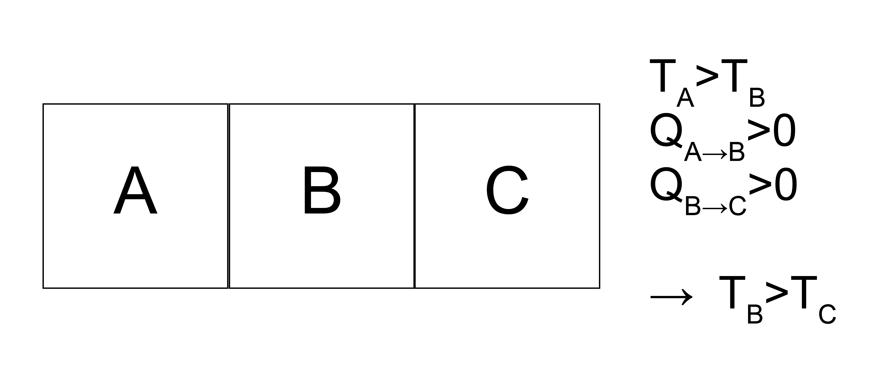
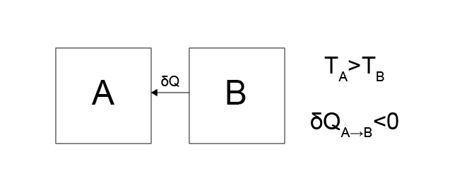
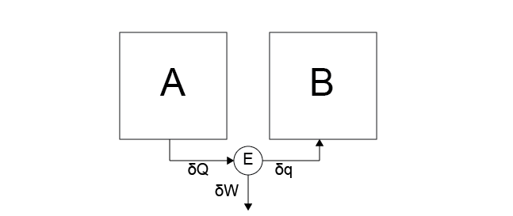
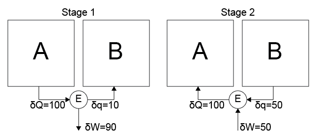

Heat engines and possible processes#
Additional Readings for the Enthusiast#
Tester and Modell [4], Ch. 3.8, 4.1 - 4.3.
Goals for Today’s Lecture#
What is a heat engine?
How can we use the four postulates to understand what heat engines are physically possible?
What is the efficiency of a heat engine?
What is a reversible process?
Recap of the four postulates#
In the previous lecture, we introduced the four postulates that will guide our study of thermodynamics, and furthermore discussed the first law of thermodynamics as derived from Postulate 3. Having defined the four postulates, we can now think about some of the consequences of these definitions and examine situations in which postulates would be violated. For this discussion, it’s helpful to remember the postulates which we paraphrase here:
Postulate 1: Thermodynamic systems are in stable equilibrium states that can be completely characterized by two independently variable properties and the masses of system components.
Postulate 2: In processes for which there is no net effect on the environment, systems evolve toward a single stable equilibrium state.
Postulate 3: Any two equilibrium states are connected by at least one adiabatic process which uniquely determines the change in energy between these two states.
Postulate 4: If the sets of systems \(A\), \(B\) and \(A\), \(C\) each have no heat interaction when connected across diathermal walls, then there will be no heat interaction if systems \(B\) and \(C\) are connected in the same manner. We can infer that there exists no heat interactions between diathermally-connected systems that have the same temperature.
Direction of heat transfer#
Let us first show that we can use Postulate 4 to understand the directionality of heat transfer. Assume we have 3 systems, labeled \(A, B, C\), with \(A\) connected to \(B\) and \(B\) connected to \(C\) as defined in the postulate. Based on Postulate 4, we define a quantity, the temperature, which is a state function that is equal for two systems that are connected by diathermal walls when there is no heat interaction. The temperature of \(A\), \(T_A\), is greater than \(T_B\), and we have heat interactions \(Q_{A \rightarrow B} > 0\) and \(Q_{B \rightarrow C} > 0\). Since heat can flow from \(A\rightarrow B\) and from \(B\rightarrow C\), this also then implies that there is a heat interaction between \(A\) and \(C\). We will show that this requires \(T_C < T_B\).

Why do we know that \(T_B \neq T_C\)?
Click for answer
If \(T_B\) equals \(T_C\), then we infer from Postulate 4 that there is no heat interaction between \(B\) and \(C\), which contradicts the system description that \(Q_{B \rightarrow C} > 0\).
Why do we know that \(T_B \nless T_C\)?
Click for answer
If we were to allow the systems to interact such that \(Q_{A \rightarrow B} = Q_{B \rightarrow C}\) and \(T_B\) is fixed, then there would be a heat interaction between \(A\) and \(C\). If \(T_C > T_B\) then it would be possible for \(T_A = T_C\), in which case there would be no heat interaction between \(A\) and \(C\) which would contradict this system description.
Thus, \(T_C < T_B < T_A\) is determined by the flow of heat in this system.
This shows that heat transfers from a high temperature system to a low temperature system.
Temperature increases with the energy of a system – why?
Click for answer
This follows from Postulate 2. Say that we had a system containing a low-temperature system (LT) and a high-temperature system (HT), where heat flows from HT to LT. This exchange of heat would increase the energy of our LT subsystem. Here we will enforce that heat always flows high-to-low temperature.
Say this increase in energy lowered the temperature of our LT system. With each exchange in heat, the temperature difference becomes larger, and the flow of heat continues. Thus, heat would flow indefinitely and we would never reach equilibrium, thus violating Postulate 2. We therefore require that \(dU/dT > 0\), and will follow similar logic below.
The First Law for Open Systems#
Before moving on, let us consider an application of the first law of thermodynamics to an open system that is able to exchange energy and particles with the surroundings. First, we can recall the first law for a closed system:
The second line is the differential form of the first law for a closed system. Recall that the first law emerged from the definition of Postulate 3, where we defined the change in energy between two states as the work done along an adiabatic path.
What do we have to do to view an open system as a closed one?
Click for answer
Just redefine what our boundaries are.Consider the open system in the figure below, where our system is bounded by a surface (\(\sigma\)), but has a diathermal wall where heat \(\delta Q_\sigma\) can be exchanged, a piston that can contribute work \(\delta W_\sigma\), and gap in the wall where \(\delta N_{in}\) molecules can enter or leave the system. These molecules have pressure \(P_{in}\), volume \(V_{in}\), and energy \(E_{in}\).

During time interval \(\delta t\), if we define the boundary of our system as our \(\sigma\)-surface and the \(\delta N_\textrm{in}\) added during the interval, this is a closed system! We can then write the change in energy during this interval as
Here, we define \(U_2\) as the energy of the gas within the region bounded by the \(\sigma\) surface at the end of the process, including the new gas that has been pumped in. \(U_1\) is the energy of the gas enclosed within the region bounded by the \(\sigma\) surface at the start of the process, while \(U_\textrm{in}\delta N_\textrm{in}\) is the energy of the incoming gas. This expression leads to the definition of a new quantity, the
- enthalpy#
a thermodynamic quantity equivalent to the total heat content of a system
which, for the gas being pumped in, is defined as
Why is the sign of \(P_\textrm{in} V_\textrm{in} \delta N_\textrm{in}\) positive?
Click for answer
We are adding energy to the system!
This expression then effectively says that the first law for an open system is adjusted to account for the enthalpy change associated with the change in the components of the system. We can generalize this result to multiple components that can simultaneously enter and leave the system and write it in differential form (we will not derive this, but it is straightforward to do so):
This is the generalized, differential form of the first law for a multicomponent open system.
Case studies of postulates#
Let us now consider a series of possible processes and, following similar logic used to determine the directionality of heat transfer, determine whether each process is possible according to the four postulates. This approach will lead to a discussion of the Second Law of Thermodynamics. In some cases, we will discuss the behavior of a
- heat engine#
a closed device that contains heat interactions with one or more systems and work interactions with a work reservoir but is always returned to the same state as it was prior to the interactions - that is, it only performs cyclic processes.
- work reservoir#
a system that only exchanges work with other systems
In this case, our work reservoir operates adiabatically and quasi-statically and is used for storing energy. In each of these cases, we assume that there are two systems, \(A\) and \(B\), with corresponding temperatures \(T_A > T_B\). Recall that \(dU/dT > 0\) due to the postulates - that is, increasing the energy of a system (via a heat transfer, for example) necessarily increases its temperature and vice versa. Now let us consider six cases and determine if they are possible or not according to the postulates:

Case 1: Heat transfers from system \(A\) to system \(B\).
Is this physically possible?
Yes. This behavior does not appear to violate any of the postulates since over sufficient time the temperature of system \(A\) will decrease, the temperature of system \(B\) will increase, and eventually an equilibrium will be reached at which \(T_A = T_B\).

Case 2: Heat transfers from system \(B\) to system \(A\).
Is this physically possible?
No. This behavior violates Postulate 2, namely that there is an equilibrium state reached in the long-time limit - in this case, there is no convergence to a final state since the temperature would continue to change for both systems as the temperature of \(B\) decreases and the temperature of \(A\) increases.

Case 3: Work is done on a heat engine by the work reservoir, and the heat engine then transfers heat into system \(A\).
Is this physically possible?
Yes. This behavior does not appear to violate any postulates, regardless of whether heat transfers between \(A\) or \(B\) (the direction was chosen somewhat arbitrarily). Because the work reservoir is part of the environment, transferring energy from the work reservoir to either system via the reservoir does not violate Postulate 2 since there is a net effect on the environment. We conclude that work can be done on an engine by the environment and completely transferred as heat into a system.

Case 4: Heat is transferred from system \(B\) to the heat engine and ALL of this energy appears as work in the reservoir, decreasing the temperature of \(B\).
Is this physically possible?
No. This process violates Postulate 2.
Consider what would happen if we combined Case 3 and 4 – two separate processes that be considered isolated, but together effectively amount to transferring heat from \(B\) to \(A\), which we already showed created a non-convergent system.
By extension, any cyclic process that transfers energy from a system and converts all of the transferred energy to usable work in the environment is impossible. Such a process would lead to perpetual motion machines, for example.

Case 5: Heat is transferred from system \(A\) to the heat engine. Some of this heat is transferred to system \(B\) and some is transferred as work to the work reservoir.
Is this physically possible?
Yes. Nothing in this process violates the postulates, as over sufficiently long amounts of time the heat transfer between \(A\) and \(B\) will lead to a stable state.

Case 6: All arrows from Case 5 are reversed - heat flows from system \(B\) to the heat engine then to system \(A\), and work is transferred to the heat engine from the work reservoir.
Is this physically possible?
Because work is being extracted from the environment, this process is possible - the injected work makes up for the transfer of heat, preserving Postulate 2.The last two cases, Case 5 and 6, are opposites and both centrally involve the heat engine as a means of controlling the conversion between heat in the two systems and work in the environment.
In principle, there could be some processes associated with these state that violate the postulates.

For example, we could start in the vein of Case 5 by transferring heat \(\delta Q = 100\) from \(A\) to the engine, then transferring a small amount of heat \(\delta q = 10\) from the engine to \(B\), and extracting the rest of the heat via work from the engine to the environment (\(\delta W = 90\)).
Say we then define a process in the vein of Case 6 in which a small amount of work is transferred from the environment to the engine (\(\delta W = 50\)), a large heat transfer \(\delta Q = 50\) is conducted from \(B\) to the heat engine, then \(\delta Q = 100\) is transferred from the engine back to system \(A\). System \(A\) has now undergone a cyclic process in which the net result is tantamount to Case 4, which is impossible. So there must be some limits placed on the engine which mediates the heat and work interactions, which we will now discuss.
Heat engine efficiency#
We can now define the
- efficiency#
\(\eta \equiv -\frac{\delta W}{\delta Q}\); the proportion of work done by the engine to the amount of heat added by a hot system
We include a negative sign to enforce positive efficiency, as heat and work should have opposite signs.
Focusing on the heat engine in Case 5, the action of this engine transfers heat from system \(A\) and does work on the environment.
where \(\eta_5\) is the efficiency of a heat engine performing Case 5. \(\delta W_E\) is the work performed by the engine during the process and \(\delta Q_A\) is the heat extracted from the hot system, or in this case system \(A\).
What is the efficiency of Case 6?
Click for answer
Exactly the same! Case 6 has the same value of work and heat, but with opposite signs, thus the efficiency would be unchanged. Following the example of Case 5 and treating the engine as the system, work is done by the heat engine so \(\delta W_E < 0\), and heat flows to the engine away from system \(A\) so \(\delta Q_A > 0\).
Higher efficiencies indicates that a higher fraction of the heat transferred from system \(A\) is converted into work on the surroundings (versus being transferred to system \(B\)) From the discussion above, we know that the efficiency for Case 5 cannot equal 1, since that would mean that all of the heat extracted from system \(A\) is usable as work in the environment.
So, let’s revisit our postulate-breaking example above and determine the required relationship between the efficiencies of these two processes. If we run these processes such that no net work is done on the environment (i.e. \(\delta W_E\) is the same for the engine performing Case 5 and Case 6), then the combined process is possible and does not violate the postulates if:
In other words, processes are where heat is extracted to become work are less efficient than processes where work is turned into heat.
What postulate would be broken if \(\eta_5 > \eta_6\)?
Click for answer
Here, \(Q_A\) for the process in Case 5 is smaller than \(Q_A\) for the process in Case 6, meaning that less energy is extracted from \(A\) during the process in Case 5 than is returned to \(A\) during the process in Case 6. Running these two processes cylically would thus result in a net transfer of heat from \(B\) to \(A\) since there is no net effect on the environment. This transfer is impossible since it reduces to Case 2.
If \(\eta_5 = \eta_6\), then the system and its environment both return to their initial states. The latter case is referred to as a
- reversible cycle#
a cycle where the action of both processes leaves no net effect on the system or environment
Reversible cycles can only occur if there is no heat lost due to friction or other processes not considered explicitly in the two Cases. We will also define a
- reversible heat engine#
any heat engine capable of performing reversible cycles; immune from heat lost due to friction or other processes
From the discussion above, we then note that for any reversible heat engine \(\eta_5 = \eta_6\), for any other heat engine \(\eta_5 < \eta_6\), for any heat engine \(\eta_5 < 1\), and thus we establish that in general \(\eta_5 \le \eta_6 < 1\) (although in principle \(\eta_6 = 1\) is possible for an irreversible engine, although we will focus henceforth on reversible engines so this possibility will be ignored). Finally, we note that a reversible heat engine is the engine capable of extracting the most work from the process performed in Case 5 during a cyclic process. If we were to perform Case 5 and then Case 6 using a non-reversible heat engine such that \(\delta Q_A\) were the same in each case, then less work must be extracted during Case 5 than is returned to the system during Case 6 since \(\eta_5 < \eta_6\) and these work terms can only be equal if \(\eta_5 = \eta_6\) and the engine is reversible. Therefore, a reversible heat engine is of particular interest since it maximizes the work extracted during cyclic processes (which will be relevant to the generation of power, for example, when considering the theoretical efficiency of power plants).
We have just defined a reversible heat engine as one that can perform the processes in both Case 5 and Case 6 with the same efficiency, \(\eta_5 = \eta_6 \equiv \eta\). In general, a process is reversible if a second process could be performed to restore the system and all elements of the surroundings to the initial state, except for differential changes of second order. It also follows that all reversible processes are necessarily quasi-static (i.e., they pass through a series of equilibrium states), although not all quasi-static processes are necessarily reversible. This observation stems from Postulate 2 - if a process were not quasi-static, by definition it passes through isolated non-equilibrium states that then must relax to equilibrium over sufficiently long times according to Postulate 2. An isolated system will not spontaneously revert back to the isolated non-equilibrium state, and the only way to convert it back to its prior state would be to remove the system from isolation. Thus, the transformation of the non-equilibrium state to the equilibrium state is irreversible, and as a result a completely reversible process cannot pass through non-equilibrium states. To phrase it one more way - all reversible processes only pass through equilibrium states along a quasi-static path.